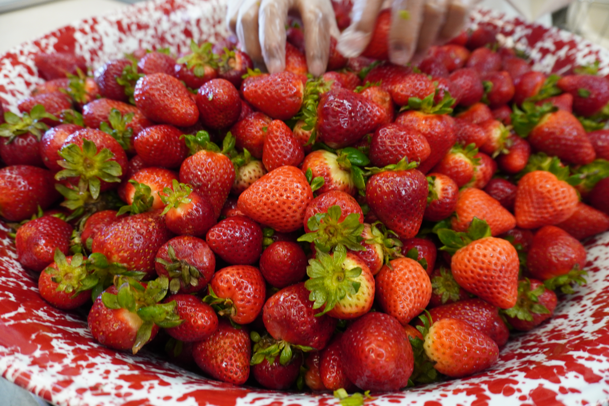
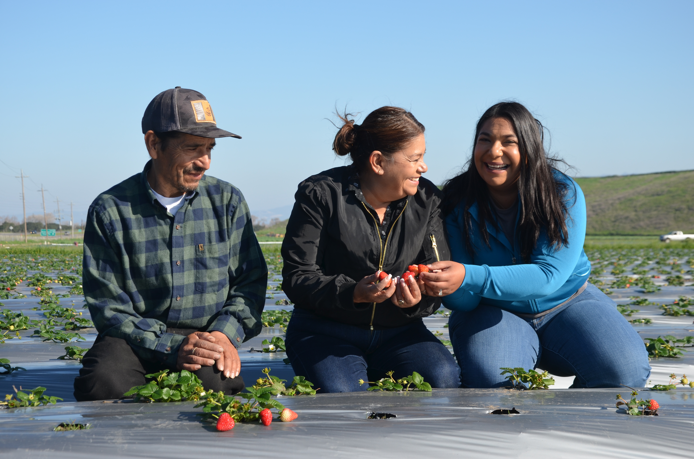
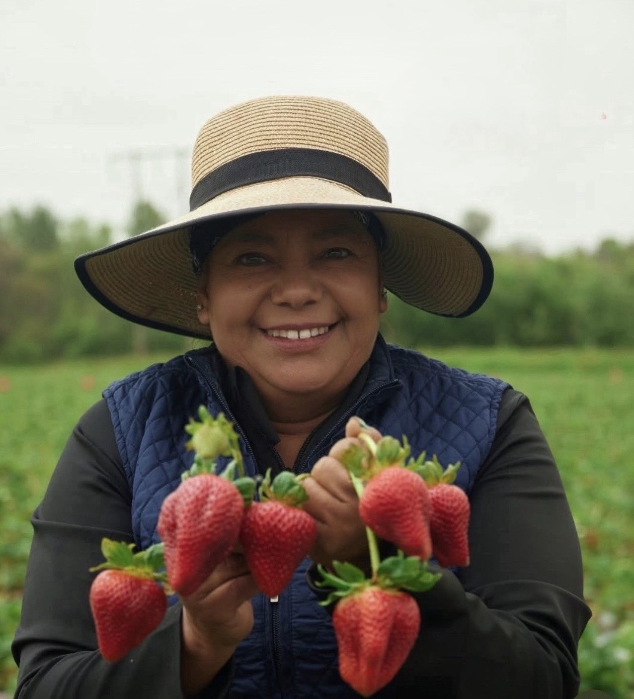
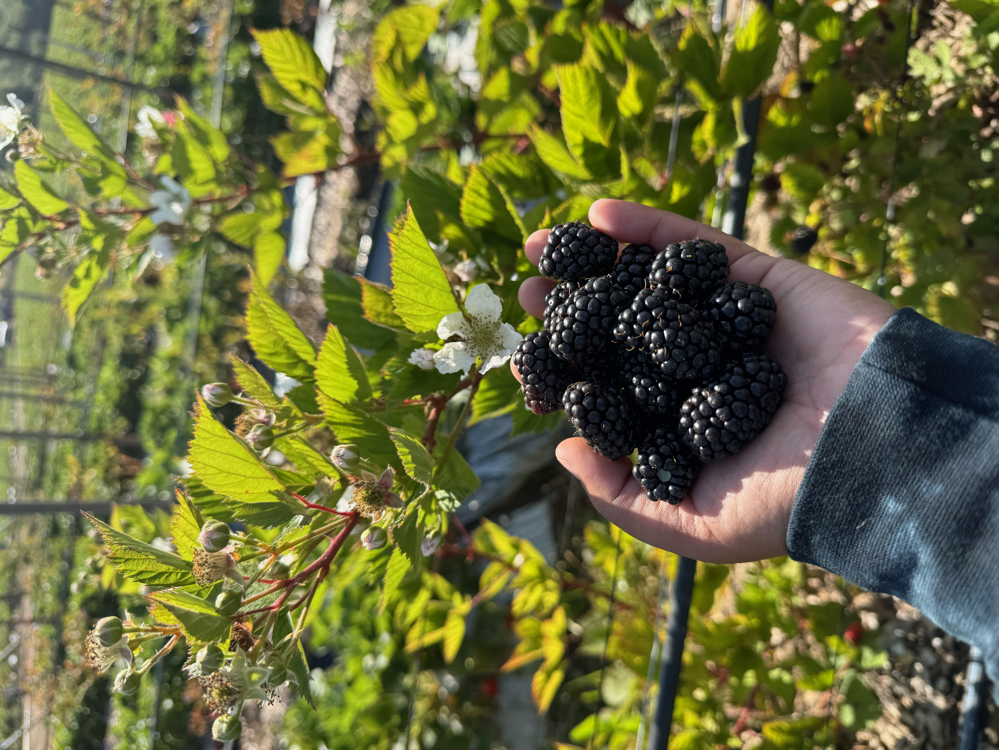
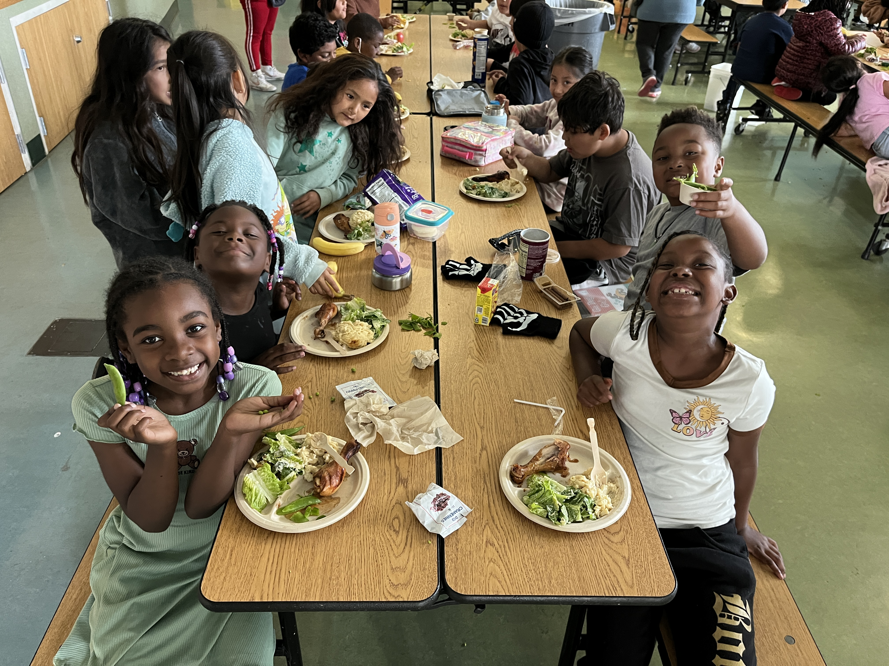
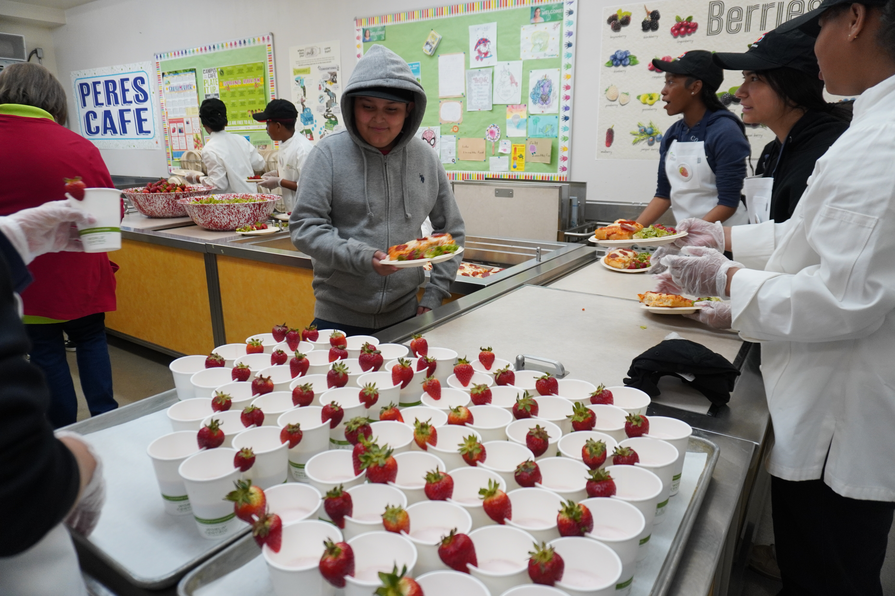
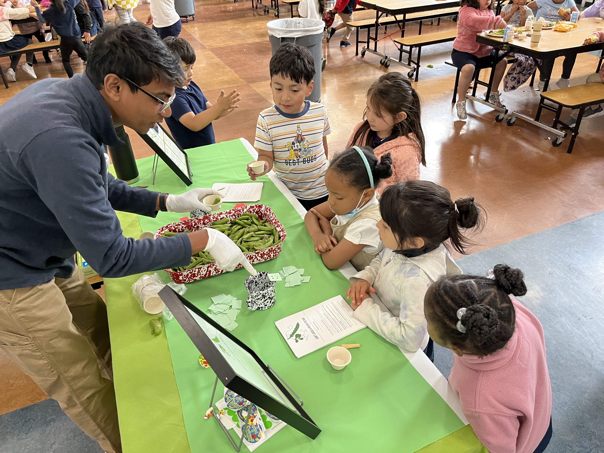
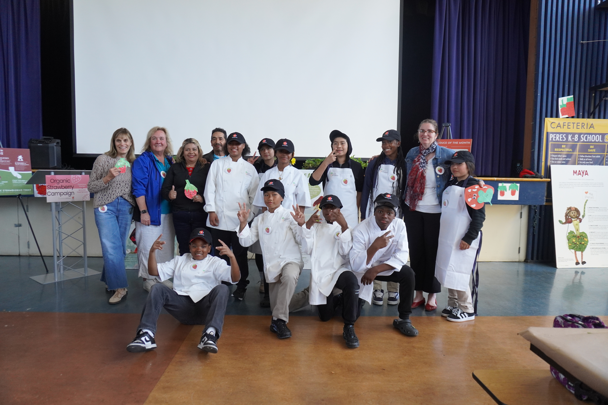
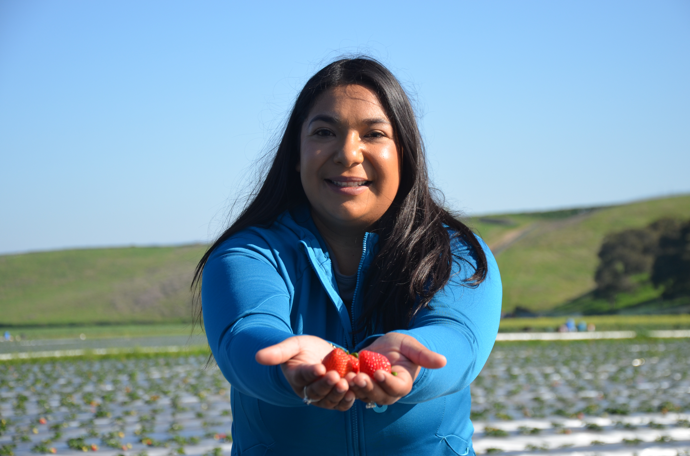
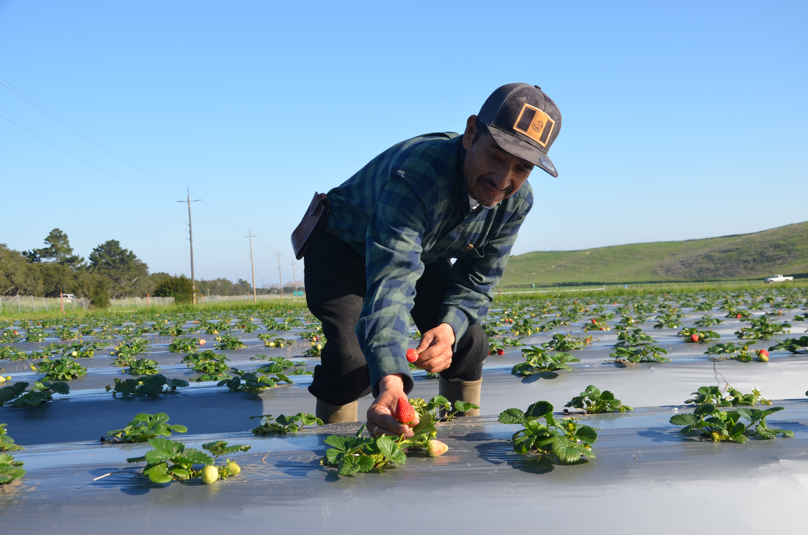

Mimi's Organic Farm
Organic berries.
Family grown.
Rooted in generations of regenerative farming.
Our Story
Farming is part of our family. Our strawberries and blackberries are part of our family.
Domitila Tapia began working in strawberry fields in Mexico alongside her parents and grandparents before continuing her farming journey in California. Today, Mimi's Organic Farm is run by Domitila and her family, carrying forward generations of agricultural knowledge while growing food organically and with deep care for the land.
Read our story →
Meet Domitila
Growing with care, from one generation to the next.
For Domitila, organic farming is personal. She grew up with farming traditions rooted in working closely with the soil, observing plants, and using natural methods to protect crops and nourish the land.
That same care shapes the way Mimi's grows berries today.
What We Grow
Organic berries, grown with intention.
Our crops are grown organically with practices focused on soil health, crop rotation, compost, biodiversity, and careful observation throughout the growing season.

Blackberries

Sugar Snap Peas

Farm to School
Growing food for the next generation.
Mimi's Organic Farm works with school districts across California to bring locally grown organic produce into school meal programs. These partnerships connect students directly with local agriculture while creating strong and reliable markets for organic farmers.
0
school districts
0
strawberries sold to schools in 2026 YTD
0
strawberry school sales in 2026 YTD
Learning Through Food
Food is more meaningful when students know where it comes from.
Our farm-to-school work includes opportunities for students and school food leaders to experience farming firsthand.
In 2025, Mimi's conducted sugar snap pea taste tests across seven schools in four districts, giving students an opportunity to learn how organic produce is grown and why real food does not always look perfectly uniform.
In August 2026, Mimi's also welcomed representatives from purchasing school districts to the farm to learn about organic farming, crop production, and soil health.
Explore Farm to School →

The People Behind Mimi's
A family farm, built together.
Domitila Tapia
Owner + Farmer

Marlen Tapia
Farm + Sales Director
